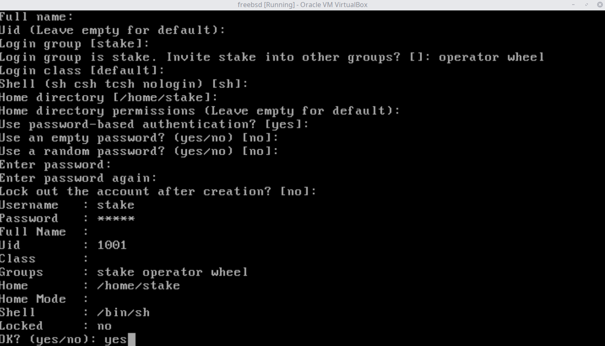
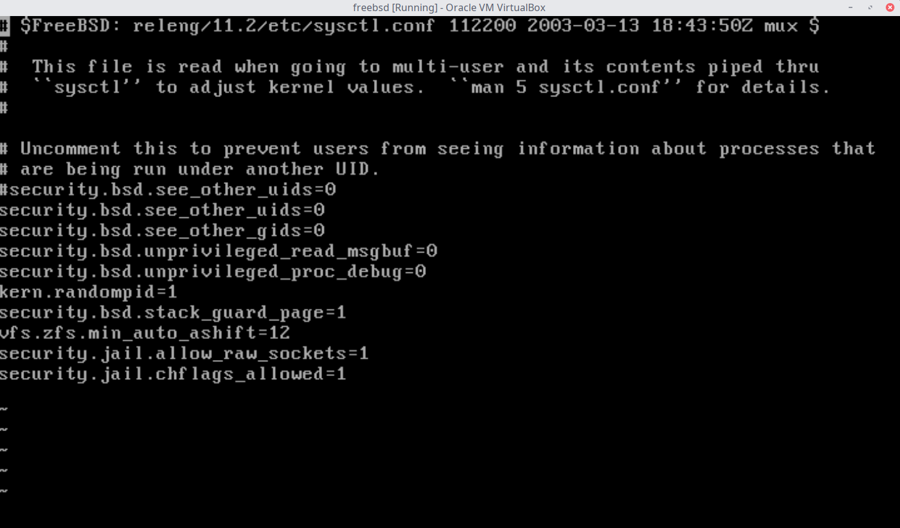
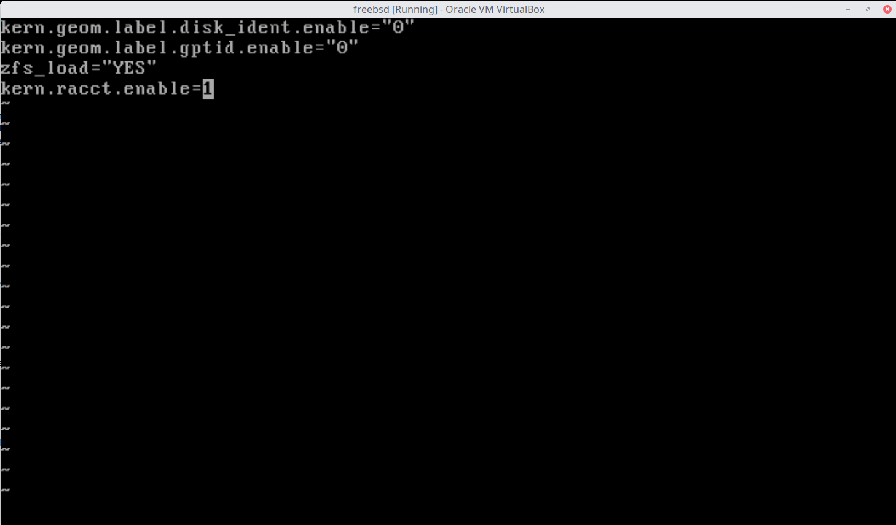
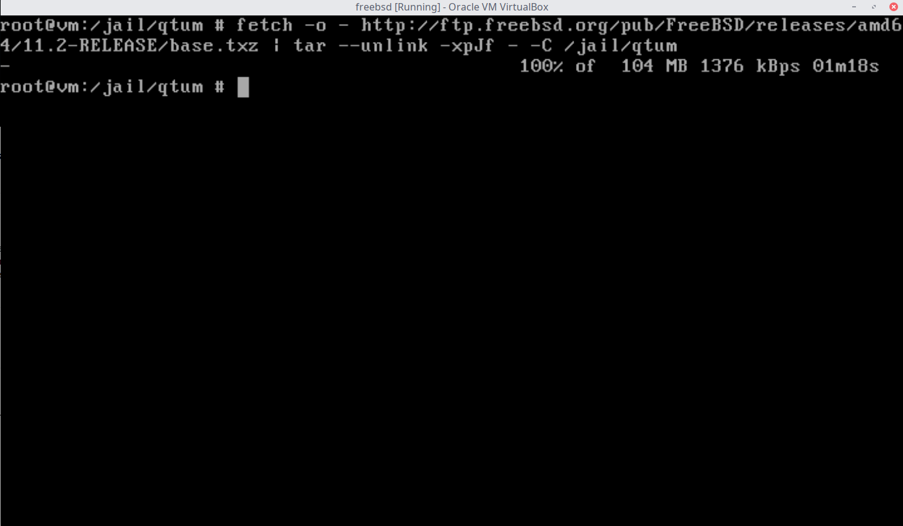
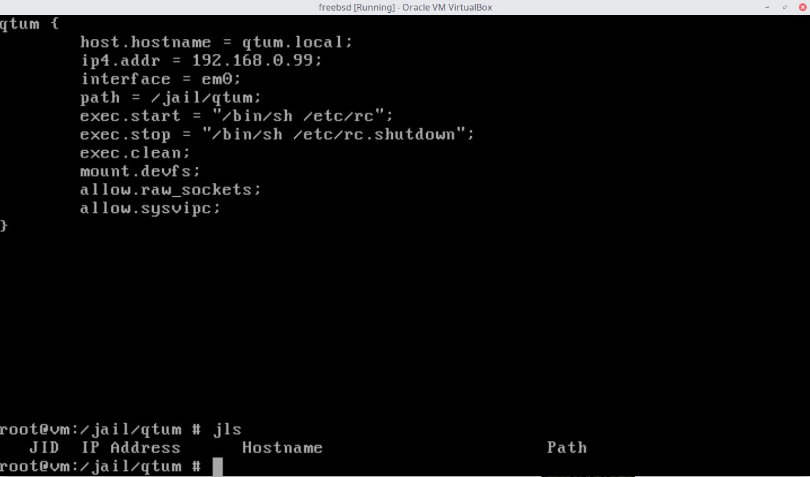
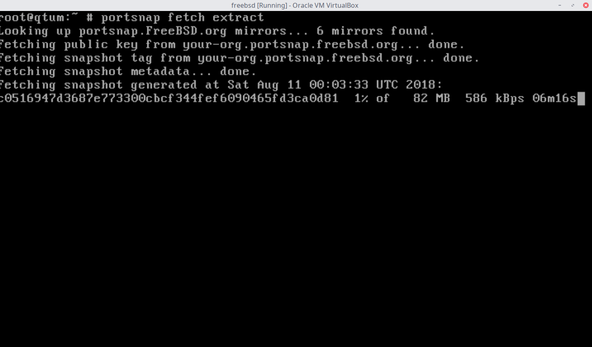
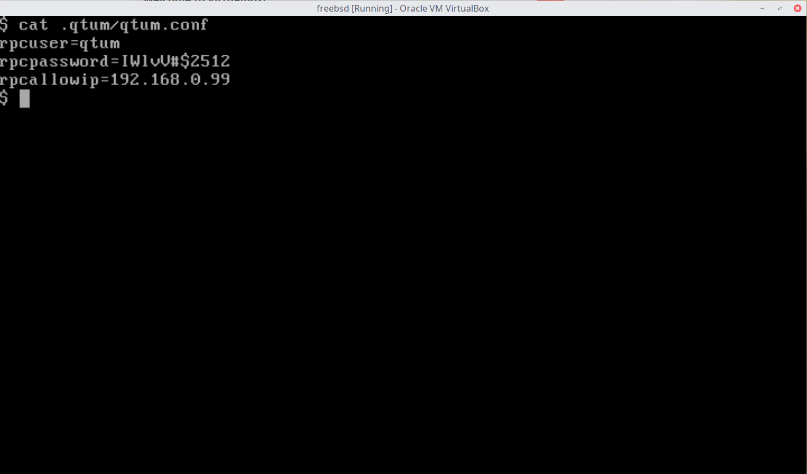
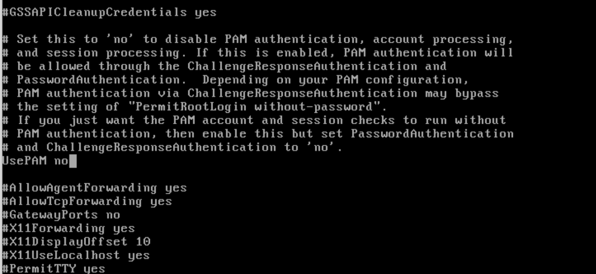
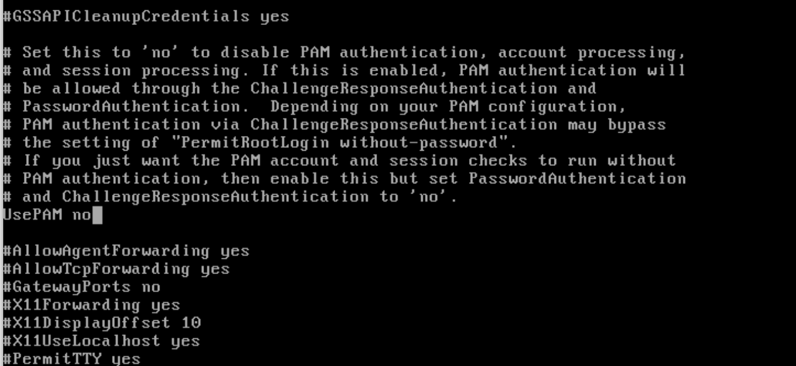
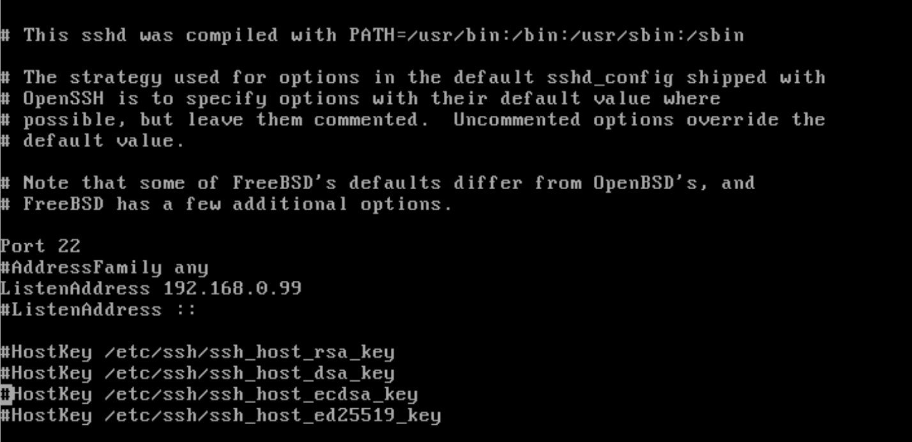

Staking Qtum on FreeBSD
FreeBSD is a very powerful operating system, it has a great history of reliability, security and stability. Here we show how it can be used to stake Qtum in a secure way.
Isolating Qtumd in a FreeBSD jail
FreeBSD jails are a very powerful feature, in summary, your jail instance is more protected as it's like having a separate OS just for Qtum with reduced privileges.
Here's a good read on Jails: https://www.freebsd.org/doc/handbook/jails.html
FreeBSD version used for this tutorial is 11.2, download it from the official FreeBSD mirrors:
https://www.freebsd.org/doc/handbook/eresources-web.html
Installing FreeBSD
Important: Make sure to install and enable NTP, it's necesary to stay synchronized to network clocks.
Install FreeBSD as normal, however, the following hardening settings are recommended during install:

Create user
Create a user with permissions "operator wheel"

Please remember to do all these commands as root
Host:
/etc/sysctl.conf
Allow sockets and upgrades in jail
security.jail.allow_raw_sockets=1
security.jail.chflags_allowed=1

/etc/rc.conf
firewall_enable="YES"
firewall_quiet="YES"
firewall_type="workstation"
firewall_myservices="22 3888"
firewall_allowservices="any"
firewall_logdeny="YES"
jail_enable="YES"

Notice that we've added some settings for firewall, these will enable IPFW and basic settings to secure our Jail, allowing only ports 22(ssh) and 3888(Qtum) to be accessed.
Resource limits for Jails
/boot/loader.conf
kern.racct.enable=1
jail_enable="YES"

Creating our Jail for staking
zfs create -o mountpoint=/jail zroot/jail
(Change zroot for whatever name you chose for your zfs pool)
zfs create -o mountpoint=/jail/qtum zroot/jail/qtum

Now we've created our jail for staking Qtum, let's fetch and install FreeBSD on it!
cd /jail/qtum/ && fetch -o - http://ftp.freebsd.org/pub/FreeBSD/releases/amd64/11.2-RELEASE/base.txz | tar --unlink -xpJf - -C /jail/qtum

We've now installed FreeBSD into /jail/qtum
Typing ls /jail/qtum/ should show the filesystem of our Qtum FreeBSD Jail
Now, let's create the jail configuration file:
/etc/jail.conf
qtum {
host.hostname = qtum.local;
ip4.addr = 192.168.0.99;
interface = em0;
path = /jail/qtum;
exec.start = "/bin/sh /etc/rc";
exec.stop = "/bin/sh /etc/rc.shutdown";
exec.clean;
mount.devfs;
allow.raw_sockets;
allow.sysvipc;
}

Ok now it's time to launch our jail!
service jail start qtum
We've just started our Qtum jail, We can now get into our Qtum jail to finish configuration, install Qtum and launch the wallet.
jexec qtum /bin/csh
cp /usr/share/zoneinfo/YOURTIMEZONE/ /etc/localtime
This is very important, if the time info is incorrect, we'll produce orphan blocks or will be unable to sync
Create our basic /etc/rc.conf for our Qtum Jail
Qtum Jail:
/etc/rc.conf
syslogd_flags="-s -s"
sshd_enable=YES
clear_tmp_enable=YES
clear_tmp_X=YES
extra_netfs_types=NFS
dumpdev=NO
update_motd=NO
keyrate=fast
sendmail_enable=NONE
sendmail_submit_enable=NO
sendmail_outbound_enable=NO
sendmail_msp_queue_enable=NO
Add dns nameservers to /etc/resolv.conf
echo "nameserver 8.8.8.8" >> /etc/resolv.conf
echo "nameserver 8.8.4.4" >> /etc/resolv.conf
Installing Qtum
Now that we've got our jail up and running, we need to install Qtum. There's 2 options on doing this, we can use the pkg repository or the powerful FreeBSD ports which are usually updated faster:
pkg repository
pkg update -f
pkg install -y qtum

FreeBSD ports
portsnap fetch extract
cd /usr/ports/net-p2p/qtum && make install clean
The above will ask for a lot of configuration options, it might be better to use make config-recursive to set all options before compiling.
If you want to use default settings just type cd /usr/ports/net-p2p/qtum && make install clean BATCH="YES"
Running Qtum
Launching Qtum is just like in any other *NIX operating system, however there's a minor difference here due to how FreeBSD jails work. First, we need to create a qtum.conf file with the following contents:

This config is necessary, otherwise calling the daemon will return errors.
Then we can launch withqtumd -daemon
Security tips
- Set up firewall on host (you cannot setup a firewall inside a jail) and enable only the ports you need (22 and 3888) This is done in the host rc.conf at the top of this tutorial
- Disable history, this will completely disable console history and it's a way to help secure your staking box, type the following on your FreeBSD console:
unset history; unset savehist Secure SSH:
- Disable password authentication

 

- Disable password authentication
If using the FreeBSD box on your home network, force it to listen on local network only.
